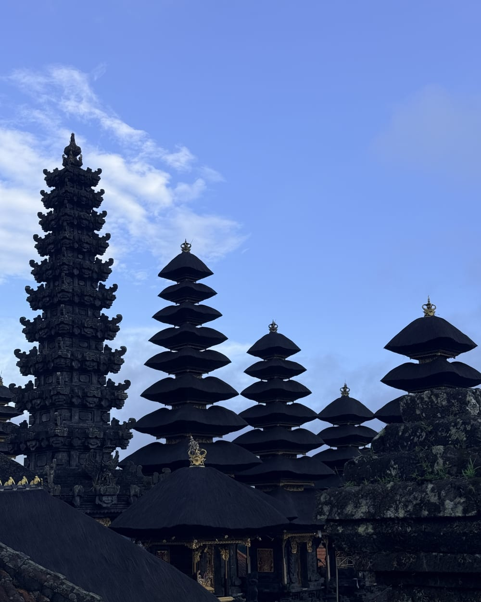

Viajes boutique a Asia · En español
Asia siempre estuvo en tu lista. Y no era falta de ganas — era no saber por dónde empezar. Nosotros lo resolvemos: tú solo viajas.
Moverse por Asia es una aventura increíble, pero planificarla no tiene por qué ser un dolor de cabeza. Diseñamos experiencias pensadas exclusivamente para ti, combinando la magia de Oriente con la calidez de nuestra cultura.
Entendemos tu forma de viajar, tus gustos y lo que buscas en una experiencia inolvidable. Hablamos tu mismo idioma (literal y culturalmente).
Si viajas solo o sola, no tienes que quedarte con las ganas. Súmate a nuestros viajes en grupo, comparte la aventura con personas que buscan lo mismo y regresa a casa con amigos nuevos.
Olvídate de las barreras de comunicación. Toda la planificación, el acompañamiento y las experiencias son totalmente en español.
No te lo contamos desde lejos: vivimos en Da Nang, Vietnam. Estamos en el mismo huso horario que tu viaje, conocemos los secretos locales y te apoyamos en tiempo real.
No vendemos paquetes en masa. Cada ruta, hotel y actividad ha sido seleccionada y probada de primera mano por nosotros para garantizar calidad y seguridad.
Tu viaje empieza desde el primer clic. Atención personalizada y asesoramiento experto desde que empiezas a planificar hasta que regresas a casa.
Queremos hacer tu viaje posible: contamos con opciones de pago flexibles para que financies tu aventura de forma cómoda y sin estrés.
Estilos de viaje
Cuatro formas de viajar con nosotros — desde acompañarte en persona hasta darte la ruta lista para que viajes a tu aire. Elige la que va contigo.

Recorre Asia con nosotros. Nuestras rutas estrella: te acompañamos en persona para vivir Asia desde adentro, cuidando cada detalle.

Viaja acompañado por coordinadores y guías de total confianza que hablan tu idioma. Tú solo disfruta; nosotros coordinamos desde aquí.

Tómate un café virtual con nosotros. Resolvemos tus dudas y ordenamos tu ruta para el Sudeste Asiático, Corea y Japón.

Rutas optimizadas día por día, basadas en nuestra experiencia real viviendo en Asia. Descarga, viaja y disfruta.
Asia en movimiento
El rugido de una metrópolis futurista, el silencio de un amanecer en los templos antiguos, el picante que te vuela la cabeza en un puesto callejero... Un viaje por los contrastes de Asia que redefine lo que significa estar vivo. Tu próxima gran historia empieza aquí.
Detrás de la marca
Periodista venezolana, creadora de contenido y una mente inquieta que siempre ha creído que la vida se mide en experiencias. Mi historia con la organización y la logística no empezó ayer: soy la fundadora y sigo liderando On Stage Producciones en Venezuela, una empresa con la que creamos y coordinamos momentos inolvidables. Mi pasión por entender el mundo, sus historias y sus dinámicas me llevó a Madrid a hacer un máster, un paso clave que expandió mi visión global.
Hoy, mi base está en Da Nang, Vietnam, donde vivo desde hace más de dos años. Pero mi brújula no se detiene aquí: he recorrido 10 países de Asia, sumergiéndome en sus culturas, probando sus sabores y construyendo una red de confianza sobre el terreno.
Asia Lo Posible nació de una idea simple: diseñar el viaje que yo le haría a alguien que quiero.
Al unir mi experiencia activa en producción, mi ojo periodístico y mi vida en el continente, el resultado es un viaje impecable. Conozco a los proveedores cara a cara, hablo tu idioma y entiendo lo que busca un viajero exigente. Por eso, cada hotel, cada ruta y cada detalle está pensado para que tú solo te dediques a vivir Asia, con la seguridad de que nada queda a la improvisación.
Sígueme en @kathmolinaresTours disponibles
Salidas confirmadas y listas para reservar. Haz clic para ver el itinerario completo, día a día.

14 días · 6 destinos. Hanói, crucero por la Bahía de Halong, Hue, Da Nang, Hoi An y los templos de Angkor. Todo en español.

Tu grupo, tus fechas, tu ritmo. Diseñamos la ruta a medida desde 5 personas, con todo el respaldo del negocio.
Toca cada destino para ver el resumen. Vamos sumando nuevas rutas grupales — escríbenos para reservar plaza o recibir todos los detalles.
Hablemos
Cuéntame qué sueñas y te respondo personalmente — normalmente en menos de 24 horas.
Blog de viajes
Todo lo que aprendí viviendo aquí, para que tú viajes mejor.
Clima por regiones, temporada alta y cuándo encontrar los mejores precios.

Cómo organizar tus días en los templos, horarios y el mejor lugar para el amanecer.

Del lujo al boutique con encanto: dónde alojarte según lo que buscas.